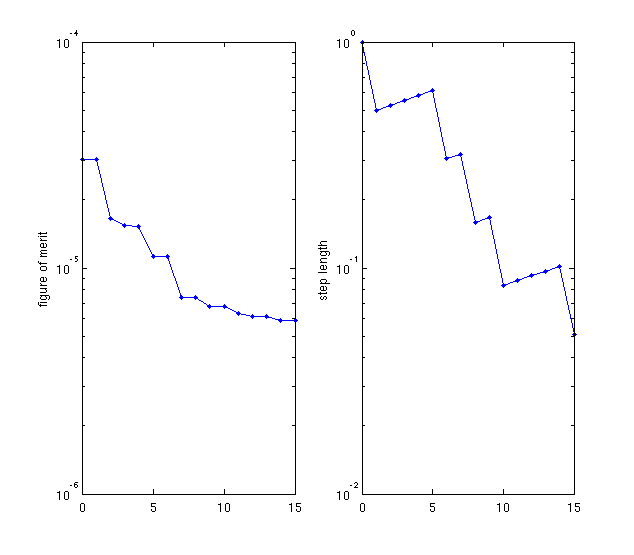
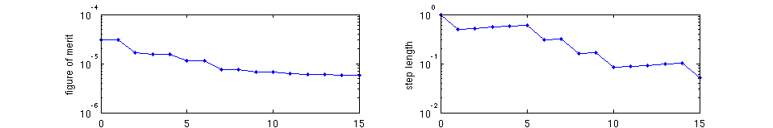

crossbeam_2D_optimization_example
Example of the optimization of two crossbeam modes.
Contents
Description
This script varies the positions of holes along a crossbeam resonator in order to match multiple resonance frequencies.
% Make this a function instead of a script to allow for nested function definitions. function [] = crossbeam_2D_optimization_example()
Simple specification of the optimization problem
- omega is the frequency used to obtain the initial guess.
- target_omega is the desired value of the real part of eigenfrequency.
- target_kappa is the desired value of the imaginary part of eigenfrequency.
- polarization is the polarization component at the center of the resonator.
We later use my_mode to make these more detailed.
omega = 0.068;
spec(1) = struct( 'omega', omega, ...
'target_omega', omega, ...
'target_kappa', 0, ...
'polarization', 2);
spec(2) = struct( 'omega', 2*omega, ...
'target_omega', 2*omega, ...
'target_kappa', 0, ...
'polarization', 1);
Initialize structure
dims = [160 80 1]; % Size of the simulation. lattice_spacings = [19 10]; % Starting structure parameters. % The first two parameters are beam widths, % the next three are horizontal hole positions, and % the last threee are vertical hole positions. p = [18.5, 10, lattice_spacings(1)*[0:2]+10.8, lattice_spacings(2)*[1:3]]'; make_structure = @(p) my_structure(dims, p); % Function handle to create structure from parameters. epsilon_init = make_structure(p);
Create the detailed specification
This specification includes running a simulation to obtain the initial guess.
for k = 1 : length(spec) modes(k) = my_mode( dims, ... spec(k).omega, ... spec(k).target_omega, ... spec(k).target_kappa, ... spec(k).polarization, ... make_structure, ... epsilon_init); end
Optimize!
The results below show that the frequencies have mostly converged to their targets.
max_iters = 15;
optimize_modes(modes, p, dims, @(x) false, max_iters, @my_simulate, @(p, v) vis_progress(dims, [spec.polarization], p, v));
0: 3.005e-05 (0.065, 5.13e+02) (0.140, 9.53e+02) [18.50 10.00 10.80 29.80 48.80 10.00 20.00 30.00] 1: 3.005e-05 (0.065, 5.13e+02) (0.140, 9.53e+02) [18.50 10.00 10.80 29.80 48.80 10.00 20.00 30.00] 2: 1.655e-05 (0.065, 5.04e+02) (0.135, 8.00e+02) [18.40 10.33 11.03 29.77 48.76 10.50 20.19 30.08] 3: 1.543e-05 (0.066, 5.01e+02) (0.138, 8.03e+02) [17.88 10.11 10.89 29.63 48.59 10.12 20.06 30.00] 4: 1.529e-05 (0.066, 4.93e+02) (0.134, 7.38e+02) [17.73 10.52 11.20 29.57 48.54 10.67 20.33 30.12] 5: 1.129e-05 (0.067, 4.95e+02) (0.138, 7.80e+02) [17.53 10.19 10.99 29.51 48.49 10.09 20.13 30.01] 6: 1.129e-05 (0.067, 4.95e+02) (0.138, 7.80e+02) [17.53 10.19 10.99 29.51 48.49 10.09 20.13 30.01] 7: 7.407e-06 (0.067, 4.93e+02) (0.136, 7.59e+02) [17.49 10.34 11.13 29.48 48.47 10.39 20.21 30.06] 8: 7.407e-06 (0.067, 4.93e+02) (0.136, 7.59e+02) [17.49 10.34 11.13 29.48 48.47 10.39 20.21 30.06] 9: 6.784e-06 (0.067, 4.93e+02) (0.137, 7.57e+02) [17.33 10.28 11.10 29.41 48.44 10.26 20.16 30.02] 10: 6.784e-06 (0.067, 4.93e+02) (0.137, 7.57e+02) [17.33 10.28 11.10 29.41 48.44 10.26 20.16 30.02] 11: 6.301e-06 (0.067, 4.93e+02) (0.136, 7.53e+02) [17.28 10.36 11.18 29.36 48.43 10.34 20.20 30.04] 12: 6.100e-06 (0.068, 4.94e+02) (0.136, 7.55e+02) [17.19 10.33 11.16 29.31 48.42 10.26 20.17 30.02] 13: 6.098e-06 (0.068, 4.95e+02) (0.136, 7.56e+02) [17.15 10.42 11.23 29.27 48.42 10.34 20.21 30.04] 14: 5.866e-06 (0.068, 4.96e+02) (0.136, 7.61e+02) [17.13 10.38 11.19 29.25 48.43 10.24 20.17 30.01] 15: 5.866e-06 (0.068, 4.96e+02) (0.136, 7.61e+02) [17.13 10.38 11.19 29.25 48.43 10.24 20.17 30.01] 
end
Source code for private functions
function [epsilon] = my_structure(dims, params) % Private function to create a photonic crystal beam structure. hole_pos = params(3:end); % First two parameters are beam thicknesses. % First create the crossbeam surrounded by air. my_shapes = {struct('type', 'rectangle', ... 'position', [0 0], ... 'size', [1e9 1e9], ... 'permittivity', 1), ... struct('type', 'rectangle', ... 'position', [0 0], ... 'size', [1e9 params(1)], ... 'permittivity', 12.25), ... struct('type', 'rectangle', ... 'position', [0 0], ... 'size', [params(2) 1e9], ... 'permittivity', 12.25)}; hole_radii = [5, 2.5]; % Hard-coded in (for now atleast). % Create symmetric hole patterns around the center of the cavity. for k = 1 : length(hole_pos)/2 my_shapes{end+1} = struct('type', 'circle', ... 'position', [hole_pos(k) 0], ... 'radius', hole_radii(1), ... 'permittivity', 1); my_shapes{end+1} = struct('type', 'circle', ... 'position', [-hole_pos(k) 0], ... 'radius', hole_radii(1), ... 'permittivity', 1); end for k = length(hole_pos)/2 + 1 : length(hole_pos) my_shapes{end+1} = struct('type', 'circle', ... 'position', [0 hole_pos(k)], ... 'radius', hole_radii(2), ... 'permittivity', 1); my_shapes{end+1} = struct('type', 'circle', ... 'position', [0 -hole_pos(k)], ... 'radius', hole_radii(2), ... 'permittivity', 1); end epsilon = {ones(dims), ones(dims), ones(dims)}; % Initial value of epsilon. % Actually create the structure. epsilon = add_planar(epsilon, 1e9, 1, my_shapes); end function [mode] = my_mode(dims, omega, omega_target, imag_omega_target, pol, make_structure, epsilon) % Create the detailed specification. [s_prim, s_dual] = stretched_coordinates(omega_target + 1i * imag_omega_target, dims, [10 10 0]); % s-parameters. J = {zeros(dims), zeros(dims), zeros(dims)}; J{pol}(dims(1)/2 + 1 + [-1:1], dims(2)/2 + [-1:1], 1) = 1; % Central current source, mu = {ones(dims), ones(dims), ones(dims)}; % Permeability. v_guess = my_simulate(omega, s_prim, s_dual, mu, epsilon, J); % Simulate to get the guess. mode = struct( 'tr', omega_target, ... 'ti', imag_omega_target, ... 'v_init', v_guess, ... 's_prim', {s_prim}, ... 's_dual', {s_dual}, ... 'mu', {mu}, ... 'eig_vis', @(lambda, v) eig_vis(dims, pol, lambda, v), ... 'make_structure', make_structure); end function [x] = my_simulate(omega, s_prim, s_dual, mu, epsilon, J) % Private function to simulate. Used to get initial guess. % Get matrices. [A1, A2, m, e, b] = maxwell_matrices(omega, s_prim, s_dual, mu, epsilon, J); % Solve. my_diag = @(z) spdiags(z(:), 0, numel(z), numel(z)); x = (A1 * my_diag(m.^-1) * A2 - omega^2 * my_diag(e)) \ b; end function eig_vis(dims, pol, lambda, v) % Visualization function for the eigenmode solve. subplot 211; n = prod(dims); unvec = @(z) {reshape(z(1:n), dims), reshape(z(n+1:2*n), dims), reshape(z(2*n+1:3*n), dims)}; F = unvec(v); imagesc(abs(F{pol})'); axis equal tight; title('F-field of mode'); subplot 212; end function vis_progress(dims, pol, p, v) % Displays the current eigenmodes and structure. N = length(v); n = prod(dims); unvec = @(z) {reshape(z(1:n), dims), reshape(z(n+1:2*n), dims), reshape(z(2*n+1:3*n), dims)}; function my_plot(img_data, ind, ytext) subplot(N+1, 1, ind); imagesc(abs(img_data)'); axis equal tight; ylabel(ytext); end epsilon = my_structure(dims, p); my_plot(epsilon{3}, 1, 'structure'); for k = 1 : N E = unvec(v{k}); my_plot(E{pol(k)}, k+1, ['mode ', num2str(k)]); end end